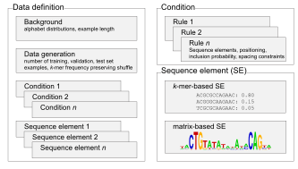

Data definition¶
The seqgra data definition language is an XML-based specification of the data simulation process. Each data definition XML file contains a complete description for the seqgra simulator to synthesize the data set.
{kind=link}
The language is defined using XML schema (data definition XML schema file).
This document describes the sections of a valid seqgra data definition. For examples of data definitions, see the data definitions folder on GitHub.
General information¶
This section contains meta-info about the grammar.
Example 1 - binary classification on DNA sequences:
<general id="mc2-dna1000-homer-100k-s1">
<name>binary classification with HOMER motifs and 1000 bp sequence window</name>
<description></description>
<task>multi-class classification</task>
<sequencespace>DNA</sequencespace>
<seed>1</seed>
</general>
Example 2 - multi-label classification with 50 labels on DNA sequences:
<general id="ml50-dna1000-homer-1000k-s5">
<name>multi-label classification with 50 labels, HOMER motifs and 1000 bp sequence window</name>
<description></description>
<task>multi-label classification</task>
<sequencespace>DNA</sequencespace>
<seed>5</seed>
</general>
a valid grammar ID can only contain
[A-Za-z0-9_-]+grammar name and description can be left empty
task can be either multi-class classification or multi-label classification
sequence space can be one of the following: DNA, RNA, protein
seed is the simulation seed (integer)
Background¶
This section contains information about the background distribution, i.e., positions in the sequence window that are not part of the grammar.
Example 1 - 1000-bp sequence window with uniform, condition-independent background distribution:
<background>
<minlength>1000</minlength>
<maxlength>1000</maxlength>
<alphabetdistributions>
<alphabetdistribution>
<letter probability="0.25">A</letter>
<letter probability="0.25">C</letter>
<letter probability="0.25">G</letter>
<letter probability="0.25">T</letter>
</alphabetdistribution>
</alphabetdistributions>
</background>
Example 2 - variable-length sequence window with condition-dependent background distributions:
<background>
<minlength>100</minlength>
<maxlength>10000</maxlength>
<alphabetdistributions>
<alphabetdistribution cid="c1">
<letter probability="0.10">A</letter>
<letter probability="0.40">C</letter>
<letter probability="0.40">G</letter>
<letter probability="0.10">T</letter>
</alphabetdistribution>
<alphabetdistribution cid="c2">
<letter probability="0.20">A</letter>
<letter probability="0.30">C</letter>
<letter probability="0.30">G</letter>
<letter probability="0.20">T</letter>
</alphabetdistribution>
<alphabetdistribution cid="c3">
<letter probability="0.29565">A</letter>
<letter probability="0.20435">C</letter>
<letter probability="0.20435">G</letter>
<letter probability="0.29565">T</letter>
</alphabetdistribution>
<alphabetdistribution cid="c4">
<letter probability="0.25">A</letter>
<letter probability="0.25">C</letter>
<letter probability="0.25">G</letter>
<letter probability="0.25">T</letter>
</alphabetdistribution>
</alphabetdistributions>
</background>
minimum and maximum length of sequence window, in nucleotides (or amino acids), both integer-valued, non-zero
one (condition-independent) or multiple (condition-dependent) background alphabet distributions
cidrefers to condition IDs (see Conditions)
Data generation¶
This section defines how many examples are generated per class/label and set (training, validation, test).
Example 1 - perfectly balanced binary classification data set with 100,000 examples and 7-1-2 split:
<datageneration>
<sets>
<set name="training">
<example samples="35000">
<conditionref cid="c1"/>
</example>
<example samples="35000">
<conditionref cid="c2"/>
</example>
</set>
<set name="validation">
<example samples="5000">
<conditionref cid="c1"/>
</example>
<example samples="5000">
<conditionref cid="c2"/>
</example>
</set>
<set name="test">
<example samples="10000">
<conditionref cid="c1"/>
</example>
<example samples="10000">
<conditionref cid="c2"/>
</example>
</set>
</sets>
</datageneration>
Example 2 - imbalanced multi-label classification data set post-processing operation:
<datageneration>
<sets>
<set name="training">
<example samples="30000">
<conditionref cid="c1"/>
</example>
<example samples="10000">
<conditionref cid="c2"/>
</example>
<example samples="10000">
<conditionref cid="c1"/>
<conditionref cid="c2"/>
</example>
<example samples="10000"/>
</set>
<set name="validation">
<example samples="3000">
<conditionref cid="c1"/>
</example>
<example samples="1000">
<conditionref cid="c2"/>
</example>
<example samples="1000">
<conditionref cid="c1"/>
<conditionref cid="c2"/>
</example>
<example samples="1000"/>
</set>
<set name="test">
<example samples="15000">
<conditionref cid="c1"/>
</example>
<example samples="5000">
<conditionref cid="c2"/>
</example>
<example samples="5000">
<conditionref cid="c1"/>
<conditionref cid="c2"/>
</example>
<example samples="5000"/>
</set>
</sets>
<postprocessing>
<operation labels="" k="3">kmer-frequency-preserving-shuffle</operation>
</postprocessing>
</datageneration>
each example can be part of one or more conditions (in the case of multi-label classification) or is part of one and only one condition (in the case of multi-class classification)
cidrefers to condition IDs (see Conditions)seqgra supports k-mer frequency preserving shuffle, where k is 1, 2, 3, n. In this case, for each set (training, validation, test) all examples shuffled in a way that dimer frequencies are preserved and those shuffled examples are added to the data set with the empty label.
Conditions¶
This section defines the rules that encode condition-specific information (i.e., information specific to classes/labels).
Example 1 - two conditions with one randomly placed sequence element specific to each:
<conditions>
<condition id="c1">
<label>AGTAAACAAAAAAGAACANA</label>
<description>FOXA1:AR(Forkhead,NR)/LNCAP-AR-ChIP-Seq(GSE27824)/Homer</description>
<grammar>
<rule>
<position>random</position>
<probability>1.0</probability>
<sequenceelementrefs>
<sequenceelementref sid="se1"/>
</sequenceelementrefs>
</rule>
</grammar>
</condition>
<condition id="c2">
<label>TYTGACCASWRG</label>
<description>Bcl11a(Zf)/HSPC-BCL11A-ChIP-Seq(GSE104676)/Homer</description>
<grammar>
<rule>
<position>random</position>
<probability>1.0</probability>
<sequenceelementrefs>
<sequenceelementref sid="se2"/>
</sequenceelementrefs>
</rule>
</grammar>
</condition>
</conditions>
Example 2 - condition with two randomly placed, ordered sequence elements with a 0 - 1000 nt gap between them:
<condition id="c2">
<label>TYTGACCASWRG and AGTAAACAAAAAAGAACANA</label>
<description>Bcl11a(Zf)/HSPC-BCL11A-ChIP-Seq(GSE104676)/Homer and FOXA1:AR(Forkhead,NR)/LNCAP-AR-ChIP-Seq(GSE27824)/Homer</description>
<grammar>
<rule>
<position>random</position>
<probability>1.0</probability>
<sequenceelementrefs>
<sequenceelementref sid="se1"/>
<sequenceelementref sid="se2"/>
</sequenceelementrefs>
<spacingconstraints>
<spacingconstraint sid1="se2" sid2="se1" mindistance="0" maxdistance="1000" order="in-order"/>
</spacingconstraints>
</rule>
</grammar>
</condition>
Example 3 - condition with two randomly placed, unordered sequence elements with a 0 - 1000 nt gap between them:
<condition id="c9">
<label>ATTGCATCAT and NTNATGCAAYMNNHTGMAAY</label>
<description>Chop(bZIP)/MEF-Chop-ChIP-Seq(GSE35681)/Homer and CEBP:CEBP(bZIP)/MEF-Chop-ChIP-Seq(GSE35681)/Homer</description>
<grammar>
<rule>
<position>random</position>
<probability>1.0</probability>
<sequenceelementrefs>
<sequenceelementref sid="se4"/>
<sequenceelementref sid="se5"/>
</sequenceelementrefs>
<spacingconstraints>
<spacingconstraint sid1="se4" sid2="se5" mindistance="500" maxdistance="1000" order="random"/>
</spacingconstraints>
</rule>
</grammar>
</condition>
Example 4 - condition with two mutually exclusive rules:
<condition id="c23">
<label>condition 23</label>
<description></description>
<mode>mutually exclusive</mode>
<grammar>
<rule>
<position>random</position>
<probability>0.7</probability>
<sequenceelementrefs>
<sequenceelementref sid="se51"/>
<sequenceelementref sid="se52"/>
</sequenceelementrefs>
<spacingconstraints>
<spacingconstraint sid1="se51" sid2="se52" mindistance="500" maxdistance="1000" order="in-order"/>
</spacingconstraints>
</rule>
<rule>
<position>random</position>
<probability>0.3</probability>
<sequenceelementrefs>
<sequenceelementref sid="se51"/>
<sequenceelementref sid="se52"/>
</sequenceelementrefs>
<spacingconstraints>
<spacingconstraint sid1="se51" sid2="se52" mindistance="1500" maxdistance="2000" order="random"/>
</spacingconstraints>
</rule>
</grammar>
</condition>
rules place sequence elements
at random positions (
<position>random</position>),at the beginning (
<position>start</position>),center (
<position>center</position>)or end (
<position>end</position>) of the sequence window,or at a specific position (
<position>123</position>)
rules place sequence elements with a specific probability (e.g.,
<probability>0.33</probability>)grammars can have one or more rules
rules can be sequentially applied to condition (
<mode>sequential</mode>) or can be mutually exclusive (<mode>mutually exclusive</mode>), in which case the sum of all rule probabilities must not exceed 1.0spacing constraints between two sequence elements can be
in-order(sequence element 1 always appears before sequence element 2) orrandomspacing constraints have a minimum and maximum distance
Sequence elements¶
Sequence elements are the core building blocks of a grammar. Two representations are supported, matrix-based sequence elements (position probability matrices) or lists of k-mers with associated probabilities.
Example 1 - two matrix-based sequence elements of widths 5 nt and 6 nt:
<sequenceelements>
<sequenceelement id="se1">
<matrixbased>
<position>
<letter probability="0.571">A</letter>
<letter probability="0.008">C</letter>
<letter probability="0.138">G</letter>
<letter probability="0.283">T</letter>
</position>
<position>
<letter probability="0.343">A</letter>
<letter probability="0.028">C</letter>
<letter probability="0.598">G</letter>
<letter probability="0.031">T</letter>
</position>
<position>
<letter probability="0.023">A</letter>
<letter probability="0.405">C</letter>
<letter probability="0.001">G</letter>
<letter probability="0.571">T</letter>
</position>
<position>
<letter probability="0.951">A</letter>
<letter probability="0.047">C</letter>
<letter probability="0.001">G</letter>
<letter probability="0.001">T</letter>
</position>
<position>
<letter probability="0.977">A</letter>
<letter probability="0.021">C</letter>
<letter probability="0.001">G</letter>
<letter probability="0.001">T</letter>
</position>
</matrixbased>
</sequenceelement>
<sequenceelement id="se2">
<matrixbased>
<position>
<letter probability="0.113">A</letter>
<letter probability="0.191">C</letter>
<letter probability="0.055">G</letter>
<letter probability="0.641">T</letter>
</position>
<position>
<letter probability="0.041">A</letter>
<letter probability="0.453">C</letter>
<letter probability="0.095">G</letter>
<letter probability="0.411">T</letter>
</position>
<position>
<letter probability="0.004">A</letter>
<letter probability="0.001">C</letter>
<letter probability="0.001">G</letter>
<letter probability="0.994">T</letter>
</position>
<position>
<letter probability="0.545">A</letter>
<letter probability="0.032">C</letter>
<letter probability="0.338">G</letter>
<letter probability="0.085">T</letter>
</position>
<position>
<letter probability="0.048">A</letter>
<letter probability="0.91">C</letter>
<letter probability="0.031">G</letter>
<letter probability="0.011">T</letter>
</position>
<position>
<letter probability="0.006">A</letter>
<letter probability="0.992">C</letter>
<letter probability="0.001">G</letter>
<letter probability="0.001">T</letter>
</position>
</matrixbased>
</sequenceelement>
</sequenceelements>
Example 2 - four k-mer-based sequence elements:
<sequenceelements>
<sequenceelement id="se1">
<kmerbased>
<kmer probability="0.4">ACGTACGT</kmer>
<kmer probability="0.4">ACGTACGG</kmer>
<kmer probability="0.1">ACGTAGGT</kmer>
<kmer probability="0.1">AGGTACGT</kmer>
</kmerbased>
</sequenceelement>
<sequenceelement id="se2">
<kmerbased>
<kmer probability="0.25">GGCCAAGG</kmer>
<kmer probability="0.25">GGGCAAGG</kmer>
<kmer probability="0.25">GGTCAAGG</kmer>
<kmer probability="0.25">GGACAAGG</kmer>
</kmerbased>
</sequenceelement>
<sequenceelement id="se3">
<kmerbased>
<kmer probability="0.7">TTTCACAT</kmer>
<kmer probability="0.2">TTTCACAA</kmer>
<kmer probability="0.05">TTTCACTT</kmer>
<kmer probability="0.05">TTTCACAC</kmer>
</kmerbased>
</sequenceelement>
<sequenceelement id="se4">
<kmerbased>
<kmer probability="0.8">GTCCCAGT</kmer>
<kmer probability="0.1">GTCCCAGG</kmer>
<kmer probability="0.05">GTTCCAGT</kmer>
<kmer probability="0.05">TTCCCAGT</kmer>
</kmerbased>
</sequenceelement>
</sequenceelements>